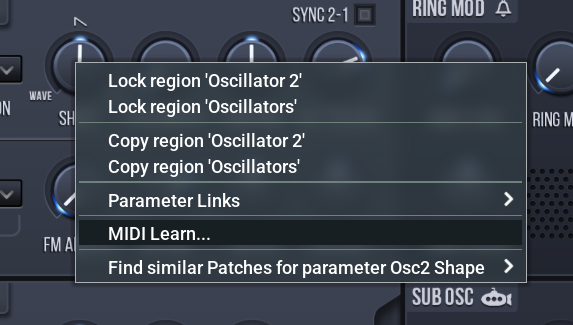
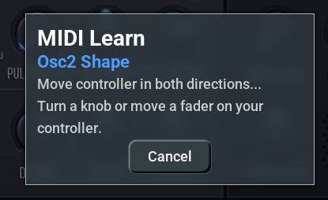
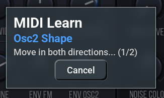
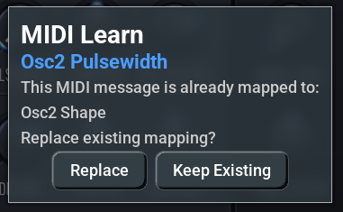
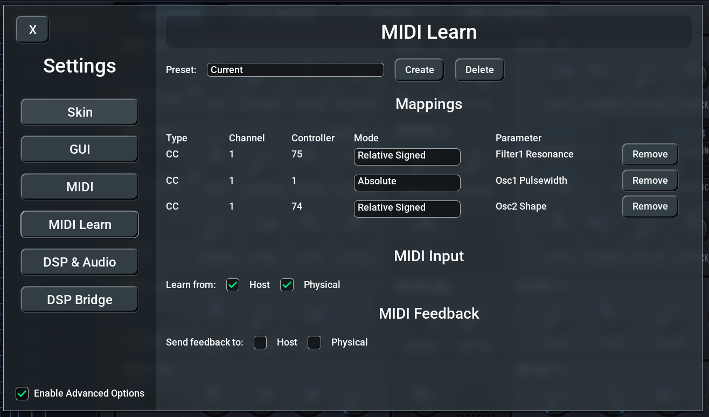
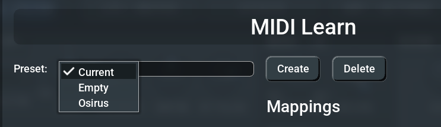
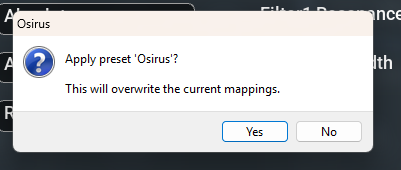
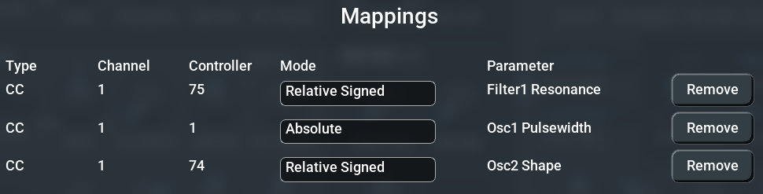
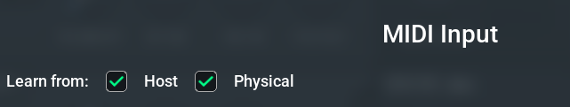
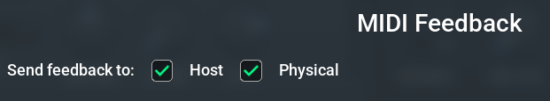

MIDI Learn allows you to map any physical MIDI controller — knobs, faders, pitch wheels, aftertouch — directly to any parameter in the synthesizer. Instead of relying on the fixed MIDI CC mappings built into the original firmware, you can create your own custom mappings that match your specific hardware setup.
This is especially useful when using external MIDI controllers that don't follow the synth's default CC assignments, or when you want quick access to parameters that aren't normally available via MIDI.
Key features: - Automatic detection — Simply move a controller and the plugin figures out the MIDI message type and mode - Multiple MIDI types — Supports Control Change (CC), Pitch Bend, Channel Pressure (Aftertouch), and Poly Pressure - Relative encoder support — Two relative modes for endless rotary encoders - Preset management — Save and recall different controller mappings for different hardware setups - MIDI feedback — Send parameter values back to your controller for motorized faders or LED rings - Input source filtering — Choose whether to learn from the DAW host, physical MIDI ports, or both
That's it! The parameter now responds to your MIDI controller.
Right-click on any parameter in the plugin interface to open the context menu, then select "MIDI Learn...".

A dialog appears showing the parameter name and a status message:
Move controller in both directions... Turn a knob or move a fader on your controller.

Move your MIDI controller — the dialog shows progress as it collects MIDI data. You need to send at least two different values (e.g., turn a knob both left and right) so the plugin can determine whether you're using an absolute or relative controller.

Once enough data is collected, the dialog closes automatically and the mapping is active immediately.
The learning dialog automatically detects the type of MIDI message you send:
| Type | Description | Example |
|---|---|---|
| CC (Control Change) | Standard continuous controller | Knobs, faders, buttons |
| Pitch Bend | Pitch wheel messages | Pitch wheel, joystick |
| Channel Pressure | Channel aftertouch | Keyboard aftertouch (mono) |
| Poly Pressure | Polyphonic key pressure | Per-key aftertouch |
For Control Change messages, the plugin automatically detects whether your controller sends absolute or relative values:
| Mode | Values | Use Case |
|---|---|---|
| Absolute | 0–127 linear | Standard knobs and faders |
| Relative Signed | 1 = increment, 127 = decrement | Endless encoders (signed mode) |
| Relative Offset | 65 = increment, 63 = decrement | Endless encoders (offset mode) |
Pitch Bend, Channel Pressure, and Poly Pressure are always mapped as Absolute.
If the MIDI controller you're assigning is already mapped to a different parameter, a conflict dialog appears:
This MIDI message is already mapped to: [existing parameter name] Replace existing mapping?

You have two options: - Replace — Remove the old mapping and create the new one - Keep Existing — Cancel and leave the current mapping in place
Open the Settings dialog by pressing Escape or by right-clicking anywhere on the plugin UI and selecting "Settings..." from the context menu. Then navigate to the MIDI Learn page.

At the top of the MIDI Learn settings page, you'll find the preset controls:

The "Current" entry always represents the mappings that are currently active in the plugin. When you learn new mappings or modify existing ones, they are reflected here.
The new preset is a copy of whatever mappings are currently active.
When you select a saved preset from the dropdown, it is loaded as a preview. You can play and test whether the mappings work with your current setup. However, if you close the Settings dialog without pressing Apply, the previous mappings are restored.
To permanently switch to the preset: 1. Select the preset from the dropdown 2. Test it 3. Click Apply 4. Confirm the dialog — the preset becomes the new active mapping

Select the preset you want to remove, then click Delete. A confirmation dialog appears. The "Current" entry cannot be deleted.
The mappings table shows all active MIDI-to-parameter assignments:

| Column | Description |
|---|---|
| Type | MIDI message type (CC, Pitch Bend, Chan Press, Poly Press) |
| Channel | MIDI channel (1–16) |
| Controller | CC number or note number (shown as "-" for Pitch Bend and Channel Pressure) |
| Mode | Absolute, Relative Signed, or Relative Offset (dropdown, editable) |
| Parameter | Target parameter name |
| Remove | Delete this individual mapping |
You can change the Mode of any mapping directly in the table by clicking the dropdown. This is useful if the auto-detection picked the wrong mode for your controller.
The MIDI Input section controls which MIDI sources are used for both learning and playback:

Enable one or both depending on your setup. If both are disabled, MIDI Learn will not receive any input.
The MIDI Feedback section controls where parameter value updates are sent back as MIDI messages:

Feedback always sends absolute values, even for parameters mapped in relative mode. Feedback is only sent for changes originating from the plugin UI or automation — not for incoming MIDI (to avoid feedback loops).